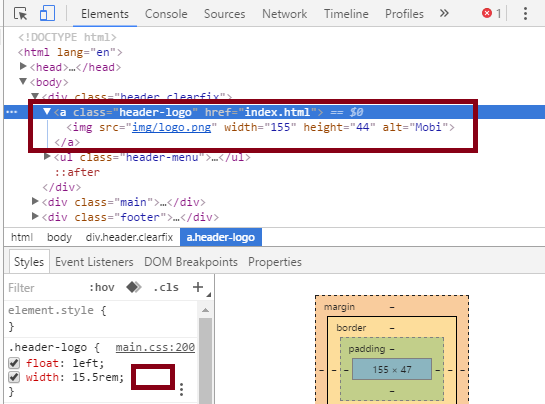

Техника Perfect Pixel это текхника вёрстки позволяющая добиться точного соответствия HTML страницы с макетом PSD (пиксель в пиксель).
Если сделить из HTML-страницы изображение и наложить на неё изображение макета PSD, обе картинки должны совпасть. Таким образом должны совместиться все компоненты страницы: header, footer, основная часть, заголовки, подзаголовки, параграфы, изображения, фоновые изображения и другие графические элементы.
Создание Perfect Pixel вёрстки полезно с точки зрения конкуретного преимущества.
Для реализации техники Perfect Pixel как правило используются расширения для браузеров либо скрипты или стили, накладывающие изображение макета поверх страницы, которую мы верстаем.
Давайте установим расширение для браузера Chrome Perfect Pixel которое позволит прямо в браузере добавлять поверх нашей HTML-страницы изображение макета.
Задание 1.1
- Открыть браузер Chrome и перейти по ссылке PerfectPixel by WellDoneCode
-
Нажать на кнопку "Установить"
-
Нажать кнопку "Установить расширение"
-
Убедиться что расширение установлено — в правом верхнем углу появится соответствующее сообщение:
Мы установили расширение для браузера (extension). Расширение или extension (плагин) — своего рода дополнительная функциональность или мини программа установленная в браузер.
Перед использованием плагина или скрипта/стиля для наложения нам потребуется само изображение макета в формате PNG (без потери качества), оно сохраняется в той же папке что и ваш проект, а затем может быть удалено.
Задание 1.2
- Скачать архив с проектом mobi.zip и разархивировать его на рабочем столе. Мы будем работать с этим проектом в течение занятия.
- Скачать файл mobi-home-desktop.psd и открыть его в Photoshop-е.
-
Нажать Ctrl Alt Shift S для вызова диалога Сохранить для Web
-
Выбрать формат сохранения PNG-24 и нажать кнопку Сохранить...
-
Сохранить изображение в корне папки проекта mobi
После установки расширения Perfect Pixel и сохранения макета в формате PNG, можно приступать к доводке нашего макета к Perfect Pixel виду.
Исправление шрифта
Перед началом работы с отдельными блоками стоит исправть проблему с используемым в вёрстке шрифтом. Шрифт который используется в HTML-странице мы не задавали, но он наследуется из стилей сторонней библиотеки normalize.css которая была подключена для приведения стилей в разных браузерах к единому виду.
Давайте убедимся в этом открыв панель для разработки (DevTools) с помощью F12 либо кликнув правой кнопкой по элементу и выбрав последнюю опцию Просмотреть код, либо нажав Ctrl Shift I.
Задание 1.3
- Открыть панель для разработки (DevTools) с помощью F12
-
Выбрать любой элемент с текстом и убедиться что используется шрифт заданный стилем в файле normalize.css
-
Открыть Photoshop с макетом, кликнуть на текстовый слой
-
Сделать двойной клик на иконке T для выделения текста и посмотреть на верхнюю панель чтобы убедиться что в PSD-файле используется шрифт Open Sans.
-
Открыть в браузере сервис Google Fonts, который позволяет бесплатно подключать веб-шрифты в том числе и Open Sans.
-
Кликнуть на ссылку Open Sans
-
После перехода на детальную страницу с описанием шрифта кликнуть на Select this font чтобы выбрать этотт шрифт.
-
Убедиться что шрифт выбран, обратив внимание на появившуюся панель внизу страницы и изменившуюся ссылку Deselect this font
-
Кликнуть на панель Family Selected чтобы увидеть детальную информацию о том, как можно подключить этот нестандартный веб-шрифт к HTML-странице.
Для подключения нестандартных шрифтов требуется:
- Разместить файл в разных форматах на сервере.
- Добавить в CSS в правиле @font-face саму ссылку на файл, и прописать параметры шрифта.
- Добавить в CSS для элементов с нестандартным шрифтом свойство font-family со значением 'Opens Sans' — когда название шрифта состоит из более чем одного слова, оно заключается в кавычки.
Сервис Google Fonts делает за нас работу по первым двум пунктам. Давайте в этом убедимся.
Задание 1.4
-
В браузере из открытой панели с деталями подключения шрифта Open Sans скопировать ссылку на таблицу стилей, которую предоставляет Google
-
Открыть новую вкладку в браузере нажав на кнопку рядом с вкладкой
-
Скопировать ссылку на таблицу стилей в адресную строку и нажать Enter и убедиться что в CSS есть путь к файлу и другие свойства шрифта.
Теперь вся работа по подключению шрифта сводится к следующим двум пунктам:
- Подключение в разделе head перед нашей таблицей стилей, таблицу стилей подключающую с помощью правил @font-face нестандартный шрифт.
- Прописывание шрифта в CSS для нужных нам селекторов с помощью font-face: 'Opens Sans', sans-serif;.
Задание 1.5
-
Открыть в браузере страницу с деталями подключения шрифта Open Sans и скопировать строчку подключения таблицы стилей Google:
- Открыть папку с проектом mobi.
- Открыть в редакторе кода веб-страницу index.html.
-
В элементе head перед подключением других таблиц стилей добавить скопированную строчку:
<head> <title>Mobi</title> <meta name="charset" content="utf-8" /> <meta name="keywords" content="mobile, applications" /> <meta name="description" content="Shop of mobile applications" /> <link href="https://fonts.googleapis.com/css?family=Open+Sans" rel="stylesheet"> <link rel="stylesheet" href="vendor/normalize/normalize.css" /> <link rel="stylesheet" href="css/main.css" /> <link rel="shortcut icon" type="image/x-icon" href="favicon.ico" /> </head> - Сохранить index.html
-
Открыть в браузере страницу с деталями подключения шрифта Open Sans и скопировать строчку для задания шрифта в CSS:
- Открыть подпапку css
- Открыть в редакторе кода таблицу стилей main.css
-
Для элемента html добавить шрифт Open Sans вставив скопированную перед этим строчку:
html { font-size: 10px; font-family: 'Open Sans', sans-serif; } - Сохранить main.css
- Открыть index.html в браузере и убедиться что шрифт поменялся.
- В панели для разработчика можно увидеть произошедшие изменения:
Настройка HTML-страницы в браузере
Чтобы совмещать изображение требуется чтобы ширина окна браузера совпадала с шириной PSD-макета. Для настройки ширины мы используем возможности панели для разработчика.
Задание 1.6
- Открыть index.html в браузере Chrome и вызвать панель для разработки DevTools F12.
-
Нажать Ctrl Shift M чтобы перейти в режим эмуляции устройств.
Выбрать Responsive, 1250 и 600 в настройках панели
- Перегрузить страницу.
Теперь нам надо настроить плагин PerfectPixel для использования локальных файлов.
Задание 1.7
-
В браузере Chrome с установленным расширением клинуть на кнопку активации расширения Perfect Pixel в правом верхнем углу браузера:
-
Появится подсказка о том, что надо поменять настройки расширения:
-
Открыть новую вкладку и вставить туда
chrome://extensions/, нажать Enter чтобы перейти в панель настроек:
- Кликнуть на Разрешить открывать файлы по ссылкам:
- Закрыть вкладку с настройками.
-
Снова нажать на кнопку вызова расширения PerfectPixel чтобы открыть панель:
-
Кликнуть на Добавить ваш первый слой чтобы добавить в качестве слоя PNG изображение PSD-макета:
-
Выбрать в качестве слоя изображение mobi-home-desktop.png из корня папки с проектом и нажать Открыть:
-
Убедиться что изображение накладывается поверх нашего макета:
Теперь в браузере мы можем видеть насколько наша вёрстка соответствует макету, и в случае не соответствия, мы можем обновить стили и привести вёрстку к более подходящему виду.
Обновление стилей
Всё что нам надо чтобы привести вёрстку к нужному виду это обновить стили для отдельных элементов, чтобы сгладить явные несоответствия. При этом следует учитывать, что ширина букв может быть немного разная в макете и тем как отображает текст браузер.
Было бы неплохо сразу видеть и сохранять результаты правок CSS. Для этого нам поможет панель для разработчиков DevTools.
Задание 2.1
-
В открытой панели для разработчиков перейти к вкладке Sources
и кликнуть на папку проекта правой кнопкой чтобы увидеть опцию Add folder to workspace и кликнуть на неё
-
В диалоге выбрать папку с проектом mobi:
-
Выбрать Разрешить в следующем диалоге:
-
Теперь снова пойти во вкладку Sources где выбрать файл main.css и нажать правую кнопку:
-
Выбрать Map to network resource... и кликнуть левой кнопкой мыши
- Нажать Enter
Теперь изменения сделанные в панели для разработчика сразу же сохранятся в нашем файле main.css.
header
При вгляде на header с панелью PerfectPixel, где можно менять прозрачность наложенного изображения (сдвинув в крайний левый и правый угол), видно, что:
- Логотип необходимо немного сдвинуть вправо
- Расстояние между пунктами меню стоит подкорректировать
Стили для логотипа
Задание 2.2
- Открыть панель расширения PerfectPixel
- Установить прозрачность на 50%
-
С помощью панели для разработчика в DOM-элементах выбрать элемент
<a class="header-logo">...

и кликнуть на пустое место справа от стилей -
Напечатать
padding-left, затем нажать Tab и напечатать1pxи нажать Enter - Обновить страницу в браузере, включить PerfectPixel и попеременно меняя прозрачность на 0 и на 100% убедиться что логотип стал на место.
Стили для меню
Задание 2.3
- Открыть панель расширения PerfectPixel
- Установить прозрачность на 50%
-
С помощью панели для разработчика в DOM-элементах выбрать элемент
<a class="header-menu">... - Кликнуть на пустое место справа от стилей для .header-menu.
-
Напечатать
letter-spacing, затем нажать Tab и напечатать-0.013remи нажать Enter
- Обновить страницу в браузере, включить PerfectPixel и попеременно меняя прозрачность на 0 и на 100% убедиться что пункты меню стали более ровно.
Не смотря на то, что пункт меню Home не выровнен, если у нас остальные элементы стали как надо, значит проблема с выравниванием в макете, либо проблема из-за разницы ширины букв в Photoshop-е и браузере.
carousel
Чтобы увидеть и подправить стили карусели нужно остановить её, нажав на стрелку вправо и затем вернувшись влево. Так же можно сместить панель PerfectPixel немного левее.
При вгляде на carousel с панелью PerfectPixel, видно, что:
- Стрелки должны быть чуть ниже
- Телефон смещён правее
- Текст должен быть выше
- Высота карусели с заборчатым фоном должна быть чуть меньше
Стили для стрелок
Задание 2.4
- Открыть панель расширения PerfectPixel
- Установить прозрачность на 50%
-
С помощью панели для разработчика в DOM-элементах выбрать элемент
<div class="carousel-control carousel-prev">...
-
Кликнуть на значения стилей для .carousel-control — margin-top и исправить его с
-3.2remна-1.4remи нажать Enter. - Обновить страницу в браузере, включить PerfectPixel и попеременно меняя прозрачность на 0 и на 100% убедиться что стрелки стали на место.
В панели для разработчика при выделенном числовом значении свойства, например margin-top с выделенным -1.2rem, если нажать стрелку вверх на клавиатуре, значение увеличится на единицу, если нажать вниз — уменьшится на единицу. Таким образом можно быстро подгонять значения.
Стили для стрелок
Задание 2.5
- Открыть панель расширения PerfectPixel
- Установить прозрачность на 50%
-
С помощью панели для разработчика в DOM-элементах выбрать элемент
<div class="carousel-img">...в первом слайде li карусели.
-
Кликнуть на значения стилей для .carousel-control — width и исправить его с
40%на39.3%и нажать Enter. -
Кликнуть на пустое место справа от стиля width: 39.3% и напечатать
text-alignзатем нажать Tab и напечататьrightи Enter - Обновить страницу в браузере, включить PerfectPixel и попеременно меняя прозрачность на 0 и на 100% убедиться что телефон на месте.
Стили для текста
Задание 2.6
- Открыть панель расширения PerfectPixel
- Установить прозрачность на 50%
-
С помощью панели для разработчика в DOM-элементах выбрать элемент
<div class="carousel-content">...в первом слайде li карусели.
-
Кликнуть на значения стилей для .carousel-content — margin-top и исправить его с
12%на10.4%и нажать Enter. - Обновить страницу в браузере, включить PerfectPixel и попеременно меняя прозрачность на 0 и на 100% убедиться что верхняя часть контента на месте. (Последняя строка чуть не вписана, но остальные встали на место, поэтому последней строкой можно пренебречь, иначе необходимо подгонять отступы заголовка и межстрочное расстояние параграфа).
Исправим положение кнопки Sign up now
Задание 2.7
- Открыть панель расширения PerfectPixel
- Установить прозрачность на 50%
-
С помощью панели для разработчика в DOM-элементах выбрать элемент
<div class="carousel-button">...в первом слайде li карусели.

-
Кликнуть на значения стилей для .carousel-button — margin-top и исправить его с
3.4remна2.9remи нажать Enter. -
Кликнуть на значения стилей для padding и исправить его на
0.7rem 1rem 1.2rem 4.6remи нажать Enter. - Обновить страницу в браузере, включить PerfectPixel и попеременно меняя прозрачность на 0 и на 100% убедиться что кнопка на месте.
Стили для фона карусели
Задание 2.8
- Открыть панель расширения PerfectPixel
- Установить прозрачность на 50%
-
С помощью панели для разработчика в DOM-элементах выбрать элемент
<div class="carousel">...
-
Кликнуть на значения стилей для .carousel — max-height и исправить его на
48.2remи нажать Enter. - Обновить страницу в браузере, включить PerfectPixel и попеременно меняя прозрачность на 0 и на 100% убедиться что зубчатый фон на месте.
features
Проскроллим страницу вниз чтобы увидеть компонент features и включим PerfectPixel.
При вгляде на features с панелью PerfectPixel, видно, что:
- Отступ сверху мал
- Блок слишком узок по ширине
- Отступ над текстом велик
- Высота всего блока больше чем надо
Отступ сверху
Задание 2.9
- Открыть панель расширения PerfectPixel
- Установить прозрачность на 50%
-
С помощью панели для разработчика в DOM-элементах выбрать элемент
<div class="features-list">...
-
Кликнуть на значения стилей для .features-list — padding и исправить его на
6.5rem 0 4.7remи нажать Enter. - Обновить страницу в браузере, включить PerfectPixel и попеременно меняя прозрачность на 0 и на 100% убедиться что изображения стали на место по высоте.
Ширина блока
Задание 2.10
- Открыть панель расширения PerfectPixel
- Установить прозрачность на 50%
-
С помощью панели для разработчика в DOM-элементах выбрать элемент
<div class="features-list">...
-
Кликнуть на селекторе .features-list и дописать перед ним класс .features чтобы добавить веса этому селектору.
-
Кликнуть на свободное место от стилей для .features .features-list и напечатать
max-widthнажать Tab и напечатать1072px
- Обновить страницу в браузере, включить PerfectPixel и попеременно меняя прозрачность на 0 и на 100% убедиться что блоки стали более отцентрированы. Полностью отцентрировать возможно и не удастся, из-за различий в расстояниях в макете.
Отступ над текстом
Задание 2.11
- Открыть панель расширения PerfectPixel
- Установить прозрачность на 50%
-
С помощью панели для разработчика в DOM-элементах выбрать элемент h3 первого элемента списка
-
Кликнуть на селекторе .features-list h3 и изменить значение свойства margin на
2.2rem 3rem 0 3rem.
-
С помощью панели для разработчика в DOM-элементах выбрать элемент p первого элемента списка
-
Кликнуть на селекторе .features-list p и изменить значение свойства margin на
0rem 4rem 0 4rem. А межстрочное расстояние line-height на1.74
- Обновить страницу в браузере, включить PerfectPixel и попеременно меняя прозрачность на 0 и на 100% убедиться что текст выровнен по вертикали с макетом.
Высота всего блока
Задание 2.12
- Открыть панель расширения PerfectPixel
- Установить прозрачность на 50%
-
С помощью панели для разработчика в DOM-элементах выбрать элемент .features-list первого элемента списка
-
Кликнуть на селекторе .features .features-list и изменить значение свойства padding на
6.5rem 0 4.3rem.
- Обновить страницу в браузере, включить PerfectPixel и попеременно меняя прозрачность на 0 и на 100% убедиться что высота features совпадает с макетом.
content
Прокрутим страницу ещё ниже чтобы посмотреть что нужно исправить для блока content
- Отступ сверху и высота велики
- Изображение смещено
- Текст смещён
Отступ сверху и высота
Задание 2.13
- Открыть панель расширения PerfectPixel
- Установить прозрачность на 50%
-
С помощью панели для разработчика в DOM-элементах выбрать элемент .content-inner
-
Кликнуть на селекторе .content-inner и изменить значение свойства padding на
2.3rem 5rem 3.1rem.
- Обновить страницу в браузере, включить PerfectPixel и попеременно меняя прозрачность на 0 и на 100% убедиться что высота content совпадает с макетом.
Изображение
Задание 2.14
- Открыть панель расширения PerfectPixel
- Установить прозрачность на 50%
-
С помощью панели для разработчика в DOM-элементах выбрать элемент .content-img
-
Кликнуть на селекторе .content-img и изменить значение свойства margin на
1.6rem 9.8rem 1.9rem 1.6rem.
- Обновить страницу в браузере, включить PerfectPixel и попеременно меняя прозрачность на 0 и на 100% убедиться что избражение и текст слева выровнены.
Текст
Задание 2.15
- Открыть панель расширения PerfectPixel
- Установить прозрачность на 50%
-
С помощью панели для разработчика в DOM-элементах выбрать дочерний элемент h1 элемента с классом .content-inner
-
Кликнуть на селекторе .content-inner h1 и изменить значение свойства margin-bottom на
0.3rem.
-
С помощью панели для разработчика в DOM-элементах выбрать элемент с классом .content-img
-
Кликнуть на селекторе .content-img и изменить значение свойства margin на
2.8rem 9.8rem 1.9rem 1.6rem.
-
С помощью панели для разработчика в DOM-элементах выбрать дочерний элемент h2 элемента с классом .content-inner
-
Кликнуть на селекторе .content-inner h2 и изменить значение свойства margin-bottom на
2rem.
-
С помощью панели для разработчика в DOM-элементах выбрать дочерний элемент p элемента с классом .content-inner
-
Кликнуть на селекторе .content-inner p и изменить значение свойства margin-top на
2remа line-height на1.74.
- Обновить страницу в браузере, включить PerfectPixel и попеременно меняя прозрачность на 0 и на 100% убедиться что текст стал выровнен. Ширина букв в браузере немного другая, потому результат когда совпадают первые четыре строки является приемлемым.
footer
Задание 2.16
- Открыть панель расширения PerfectPixel
- Установить прозрачность на 50%
-
С помощью панели для разработчика в DOM-элементах выбрать элемент .footer
-
Кликнуть на селекторе .footer и изменить значение свойства padding на
3rem 5rem.
- Обновить страницу в браузере, включить PerfectPixel и попеременно меняя прозрачность на 0 и на 100% убедиться что текст в footer-е выровнен по вертикали. Горизонтальное выравнивание видимо неверно в макете.
Формы
Домашнее задание
- Сверстать страницу с контактной формой используя технику Perfect Pixel по PSD mobi-contact-desktop.psd и отправить в Slack либо выложить на FTP. Вместо элементов формы можно использовать элементы div.
- Начать либо пройти курс Знакомство с формами.